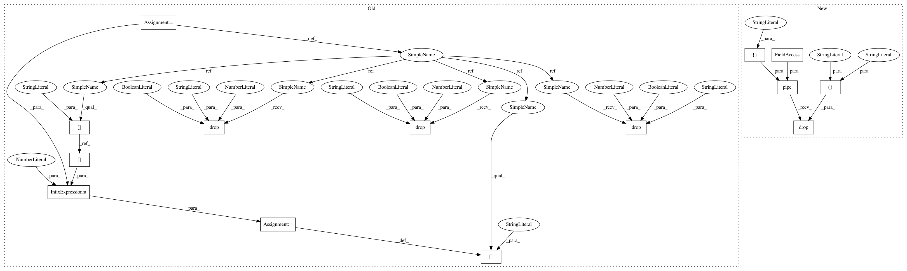

bf7f740f3d6e2d419567109e2fdb0e264e3ad913,src/pudl/transform/ferc1.py,,_plants_steam_clean,#Any#,324
Before Change
ferc1_steam_df["yr_installed"] = pd.to_numeric(
ferc1_steam_df["yr_installed"], errors="coerce")
// There are also a few zeroes... which are not valid years for us:
ferc1_steam_df = ferc1_steam_df.replace(
{"yr_const": 0, "yr_installed": 0}, np.nan)
// Converting everything to per MW and MWh units...
ferc1_steam_df["cost_per_mw"] = 1000 * ferc1_steam_df["cost_per_kw"]
ferc1_steam_df.drop("cost_per_kw", axis=1, inplace=True)
ferc1_steam_df["net_generation_mwh"] = ferc1_steam_df["net_generation"] / 1000
ferc1_steam_df.drop("net_generation", axis=1, inplace=True)
ferc1_steam_df["expns_per_mwh"] = 1000 * ferc1_steam_df["expns_kwh"]
ferc1_steam_df.drop("expns_kwh", axis=1, inplace=True)
ferc1_steam_df.rename(columns={
// FERC 1 DB Name PUDL DB Name
"plant_name": "plant_name_ferc1",
After Change
def _plants_steam_clean(ferc1_steam_df):
ferc1_steam_df = (
ferc1_steam_df.rename(columns={
"plant_name": "plant_name_ferc1",
"yr_const": "construction_year",
"plant_kind": "plant_type",
"type_const": "construction_type",
"asset_retire_cost": "asset_retirement_cost",
"yr_installed": "installation_year",
"tot_capacity": "capacity_mw",
"peak_demand": "peak_demand_mw",
"plant_hours": "plant_hours_connected_while_generating",
"plnt_capability": "plant_capability_mw",
"when_limited": "water_limited_capacity_mw",
"when_not_limited": "not_water_limited_capacity_mw",
"avg_num_of_emp": "avg_num_employees",
"net_generation": "net_generation_kwh",
"cost_land": "capex_land",
"cost_structure": "capex_structures",
"cost_equipment": "capex_equipment",
"cost_of_plant_to": "capex_total",
"cost_per_kw": "capex_per_kw",
"expns_operations": "opex_operations",
"expns_fuel": "opex_fuel",
"expns_coolants": "opex_coolants",
"expns_steam": "opex_steam",
"expns_steam_othr": "opex_steam_other",
"expns_transfer": "opex_transfer",
"expns_electric": "opex_electric",
"expns_misc_power": "opex_misc_power",
"expns_rents": "opex_rents",
"expns_allowances": "opex_allowances",
"expns_engnr": "opex_engineering",
"expns_structures": "opex_structures",
"expns_boiler": "opex_boiler",
"expns_plants": "opex_plants",
"expns_misc_steam": "opex_misc_steam",
"tot_prdctn_expns": "opex_production_total",
"expns_kwh": "opex_per_kwh"})
.pipe(_clean_cols, "f1_steam")
.pipe(pudl.helpers.strip_lower, ["plant_name"])
.pipe(pudl.helpers.cleanstrings,
["construction_type", "plant_type"],
[pc.ferc1_const_type_strings, pc.ferc1_plant_kind_strings],
unmapped="")
.pipe(oob_to_nan, cols=["construction_year", "installation_year"],
lb=1850, ub=max(pc.working_years["ferc1"]) + 1)
.assign(
capex_per_mw=lambda x: 1000.0 * x.capex_per_kw,
opex_per_mwh=lambda x: 1000.0 * x.opex_per_kwh,
net_generation_mwh=lambda x: x.net_generation_kwh / 1000.0,
)
.drop(columns=["capex_per_kw", "opex_per_kwh", "net_generation_kwh"])
)
return ferc1_steam_df
In pattern: SUPERPATTERN
Frequency: 3
Non-data size: 14
Instances
Project Name: catalyst-cooperative/pudl
Commit Name: bf7f740f3d6e2d419567109e2fdb0e264e3ad913
Time: 2019-11-16
Author: zane.selvans@catalyst.coop
File Name: src/pudl/transform/ferc1.py
Class Name:
Method Name: _plants_steam_clean
Project Name: catalyst-cooperative/pudl
Commit Name: 590028f40e74f82c3d00f0bc48b4cf415c97bfce
Time: 2019-06-13
Author: zane.selvans@catalyst.coop
File Name: pudl/transform/ferc1.py
Class Name:
Method Name: fuel
Project Name: catalyst-cooperative/pudl
Commit Name: 590028f40e74f82c3d00f0bc48b4cf415c97bfce
Time: 2019-06-13
Author: zane.selvans@catalyst.coop
File Name: pudl/transform/ferc1.py
Class Name:
Method Name: plants_hydro
Project Name: catalyst-cooperative/pudl
Commit Name: bf7f740f3d6e2d419567109e2fdb0e264e3ad913
Time: 2019-11-16
Author: zane.selvans@catalyst.coop
File Name: src/pudl/transform/ferc1.py
Class Name:
Method Name: _plants_steam_clean